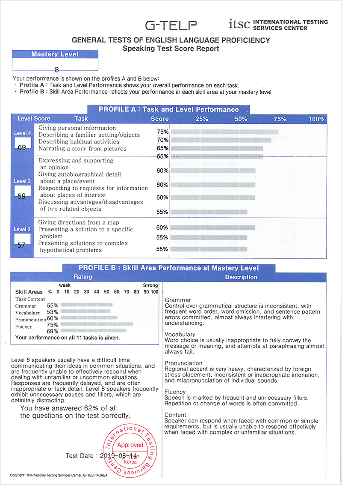

Home > Our Products > English Assessments > Speaking Test
G-TELP Speaking Test
The G-TELP Speaking Test is a Measure of General English Language Oral Proficiency
Take a Demo
Register
The G-TELP Speaking Test assesses oral English proficiency through well-defined tasks. The tasks reflect different expectations for applying knowledge of grammar and vocabulary and demonstration pronunciation and fluency. The types and complexity of the tasks increase in difficulty as the examinee proceeds through the levels.
| Test Type | Simulated Oral Proficiency Interview |
|---|---|
| Duration | Approx. 35 minutes |
| Availability of Score Report | 7 working days |
| Question | Around 30 questions divided among 11 parts |
| Level | Levels 1 to 11 |
| Descriptor | Contents, Grammar, Fluency, Vocabulary, Pronunciation |
| Duration of Score Validity | Two (2) years |
Format
| Part | Task | No. of questions | Response Time (sec) |
|---|---|---|---|
| Part 1 | Giving Personal Information | 10~12 | 20 (each) |
| Part 2 | Describing a Familiar Setting/Objects | 1 | 60 |
| Part 3 | Describing Habitual Activities | 1 | 60 |
| Part 4 | Narrating a Story from Pictures | 1 | 60 |
| Part 5 | Expressing and Supporting an Opinion | 1 | 60 |
| Part 6 | Giving Autobiographical Detail about a Place or Event | 1 | 60 |
| Part 7 | Responding to Requests for Information about Places of Interest | 7~10 | 25 (each) |
| Part 8 | Discussing Advantages/Disadvantages of Two Related Objects | 1 | 60 |
| Part 9 | Giving Directions from a Map | 1 | 60 |
| Part 10 | Presenting a Solution to a Specific Problem | 1 | 60 |
| Part 11 | Presenting a Solution to a Complex Hypothetical Problem | 1 | 60 |
It is a measure of general English language oral proficiency, rather than being specifically geared to an academic or business context (e.g., for academic study in institutions of higher education in North America).
The Speaking Test is designed for in-country use, in environments in which English is not the primary language; therefore, its applications can be adapted to the specific purposes for which it is administered.
Rather than assessing examinees at one level of English language proficiency, it evaluates the skills of examinees at three different levels of competence which reflect varying degrees of skill acquisition.
Scores derived from the G-TELP Speaking Test provide a profile of diagnostic information that is formative rather than merely summative (providing only a total score that indicates where the examinee is at that point in time):
- Indicating what examines can do in speaking the English language by carrying out specific, well-defined tasks (functional ability) as well as applying what they know about it (e.g., vocabulary, grammatical ability).
- identifying areas in which individuals or groups have demonstrated specific strengths and weaknesses toward which educational or other decisions might be directed.
- serving as a resource in the development and enhancement of curriculum, instruction, and learning.
The G-TELP is criterion-referenced; all other tests on the market are norm-referenced.
- Assessments of proficiency are made in relation to universally accepted standards that describe the progressive acquisition of English language oral communication skills by whomever, and wherever, the language is being learned.
- Because the acquisition of oral language skills is a developmental process, learners acquire these skills at different rates and with different degrees of proficiency which they demonstrate in specific tasks appropriate to the different levels.
- Norm-referenced tests compare the learner's scores with the scores of other students who have taken a test that serves a particular purpose within a particular cultural or national context. These scores serve as general indicators of the level of language acquisition that has been achieved at a specific point in time, but provide very little useful additional diagnostic information.
- In contrast, the G-TELP criteria are derived from experience regarding the acquisition of English language speaking skills by nonnative speakers regardless of any particular cultural context or specific testing purpose.
The General Tests of English Language Proficiency (G-TELP™) Speaking Test is an assessment system specifically designed to measure the English-language oral proficiency of non-native speakers (NNS).
The Speaking Test is appropriate for examinees who need English-speaking skills in a variety of contexts and who are at the secondary and college/university levels of education or in adult training/professional programs.
Users of the Speaking Test
The G-TELP Speaking Test can be used by the following:
- students of all schools, colleges, universities and technical schools
- students expecting to attend schools where English is the medium of instruction
- students in technical training institutions
- individuals in organizations that provide employee training
- individuals such as teachers and students who are studying English
- translators and interpreters whose work requires the oral communications of authentic English texts, speeches, or media broadcasts
- professionals and employees who need varying levels of English oral proficiency to perform their work
- employees of government agencies and businesses that require certain levels of English oral proficiency for specific positions
- tourists planning to visit English-speaking countries
Purpose of the Speaking Test
Results of the G-TELP Speaking Test, in conjunction with the G-TELP battery, can greatly assist in making decisions related to the following:
Placement of Individuals in EFL/ESL Training Programs
- assignment to a level of English as a second language (ESL)/English as a foreign language (EFL) training programs;
- exemption from an EFL/ESL program;
- exit from an EFL/ESL program and
- placement in a program in which English is the language of instruction
Educational Diagnoses of Language Skills of EFL/ESL Students
- identification of an individual student’s strengths and weaknesses in order to personalize instruction;
- identification of the strengths and weaknesses of a class of students in order to focus group work on specific areas
Levels of Proficiency
- Assessment of general English-speaking proficiency independent of an instructional or training program and of any achievement test results.
Employment Decisions
- In conjunction with other relevant information, the facilitation of decisions in situations in which certain minimum levels of English proficiency is required of employees:
- matching oral proficiency to certain job performance requirements
- hiring employees and placing them in positions
- employee-readiness to learn job skills
- employee-advancement to higher positions
- employee-transfer to work in other countries
- employee performance in dealing with representatives of English-speaking countries
The examinee is expected to demonstrate comprehensible oral proficiency while progressing through each task. The task content consists of the following everyday situations:
| Part | Tasks | Performance |
|---|---|---|
| Part 1 | Giving Personal information | The speaker is able to answer simple questions about self and family, responding in words, phrases, or simple sentences. |
| Part 2 | Describing Familiar Setting/ Objects | The speaker is able to name and describe a familiar setting and the objects within that setting. The speaker is able to locate and describe the spatial relationships among the objects in the setting. He/she may go beyond accurate naming of what is illustrated to describing some physical characteristics such as size, shape, etc. |
| Part 3 | Describing Habitual Activities | The speaker is able to name and describe personal activities . The speaker may go beyond a mere listing of events or activities to elaborating them with detail. |
| Part 4 | Narrating a Story from Pictures | The speaker is able to relate a simple narrative illustrated in a series of pictures. The speaker appropriately describes the setting, people, and/or objects depicted, and coherently relates the chronology of events. |
| Part 5 | Expressing and Supporting an Opinion | The speaker is able to present a personal opinion and express personal preferences, and to substantiate these opinions or preferences with at least two simple supporting arguments. |
| Part 6 | Giving Autobiographical Detail about a Place or Event | The speaker is able to describe a place or event in adequate detail. |
| Part 7 | Responding to Requests for Information about Places of Interest | The speaker is able to supply appropriate and well-formed questions and responses in a dialogue centering on requests for information. |
| Part 8 | Discussing Advantages/ Disadvantages of Two Related Objects | The speaker is able to compare and contrast the objects by giving at least two advantages and or disadvantages of each |
| Part 9 | Giving Directions from a Map | The speaker is able to give directions to a location clearly and thoroughly, so as to enable a listener to understand what route should be taken to reach a destination |
| Part 10 | Presenting a Solution to a Specific Problem | The speaker is able to clearly state and express a position on a topic and to present convincing arguments supporting that position. The speaker is able to relate an abstract issue to the specifics of the situation. |
| Part 11 | Presenting a Solution to a Complex Hypothetical Problem | The speaker is able to explain, with relevant and convincing detail, how to solve the problem(s) associated with a hypothetical situation |
Each examinee receives a Score Report that includes several scores. An examinee’s performance is shown on profiles A and B:
Profile A: Task and Level Performance
Task and Level Performance shows the examinee’s overall performance on each task.
Profile B: Skill Area Performance at Mastery Level
Skill Area Performance reflects the examinee’s performance in each skill at his/her mastery level.
Level Scores for each of the three levels (Two, Three, Four)
Skill Area Score
The Skill Areas are defined as the following:
- Rating: The examinee's performance on all 11 tasks is given and the graph shows the percentage of scores for five skill areas (Content, Grammar, Vocabulary, Pronunciation, and Fluency). Also, an explanation of the examinee’s overall speaking performance is provided.
- Description: An explanation of each skill for the examinee's performance is provided.
- Grammar: The speaker’s control of basic sentence structure
- Vocabulary: The speaker’s available vocabulary to perform certain speaking tasks
- Pronunciation: The speaker’s degree of accuracy in control over the sound system
- Fluency: The speaker’s flow of speech and degree of spontaneity as well as comfort in the performance of tasks
- Content: The topics/contexts about which the speaker can communicate

Release of Test Results
The result will be released no later than eight working days after the test date on G-TELP websites, and original score reports will be printed out or mailed out directly to test-takers within two weeks from the test date.
Validity of Test Results
A test report will not be reissued if two years have passed since taking the test because English skill may improve or decline over time.
Below are the Levels of Oral Proficiency Evaluated by the Speaking Test. The G-TELP has 11 levels of English language proficiency
Level Description
Level 1: Authentic
Level 1 speakers are able to communicate with ease in all situations, whether familiar or unfamiliar. They use extensive vocabulary, appropriate idiomatic expressions, and accurate sentence structure and patterns. Their pronunciation is clear and shows no trace of native accent.
Level 2: High-Advanced
Level 2 speakers are able to communicate their ideas effectively in nearly all situations using a wide vocabulary. Their speech is marked by the use of detail to create appropriate and informative responses. Grammar and sentence structure are usually well-controlled, with only rare errors that don’t interfere with meaning. There is a trace of regional accent, but that does not interfere with understanding.
Level 3: Advanced
Level 3 speakers are usually able to communicate their ideas effectively in nearly all situations. They often display appropriate word choice, and can usually paraphrase when lacking vocabulary in unusual or unexpected circumstances. Their speech is usually clear and understandable, although there is a marked regional accent. There are also occasional pauses or fillers but they seldom interfere with meaning.
Level 4: High-Intermediate
Level 4 speakers are generally able to communicate their ideas in most situations. Grammar and sentence structure are generally well-controlled, with occasional errors which sometimes interfere with meaning. They speak with a marked regional accent that only sometimes interferes with understanding and occasionally exhibit unnecessary pauses or fillers.
Level 5: Intermediate
Level 5 speakers are generally able to communicate their ideas in common situations, but may occasionally have trouble when dealing with unfamiliar or uncommon events. Grammar and sentence structure are relatively well-controlled. There is an obvious regional accent, which sometimes interferes with understanding, and there are also unnecessary pauses and fillers, which can interfere with meaning.
Level 6: Low-Intermediate
Level 6 speakers are generally able to communicate their ideas in common situations, but are sometimes unable to effectively respond when dealing with unfamiliar or uncommon situations. Grammar and sentence structure are generally not well-controlled. Word choice is also generally inappropriate, and regional accent is heavy, which occasionally interferes with understanding. They may occasionally have difficulty paraphrasing sentences to convey the meaning.
Level 7: High-Basic
Level 7 speakers generally have a difficult time communicating their ideas in common situations, are find it difficult to effectively respond when dealing with unfamiliar situations. Their responses are often delayed, and are usually inadequate. Grammar, sentence structure, and word choice are commonly inappropriate.
Level 8: Basic
Level 8 speakers usually have a difficult time communicating their ideas in common situations, and are frequently unable to effectively respond when dealing with unfamiliar situations. Frequent grammatical errors are committed, which almost always interferes with understanding.
Level 9: Low-Basic
Level 9 writers frequently have a difficult time communicating their ideas in common situations, and are almost always unable to effectively respond when dealing with unfamiliar or uncommon situations.
Level 10: Beginner-Basic
Level 10 speakers almost always have a difficult time communicating their ideas, even in familiar situations. Responses are always delayed, and are almost always inappropriate. Speech is maybe nearly impossible to understand because of the regional accent, grammatical errors, inappropriate word choice, etc.
Level 11: No mastery
Level 11 speakers may exhibit a vocabulary of a handful of memorized words and isolated phrases only. They are unable to communicate in a meaningful way.